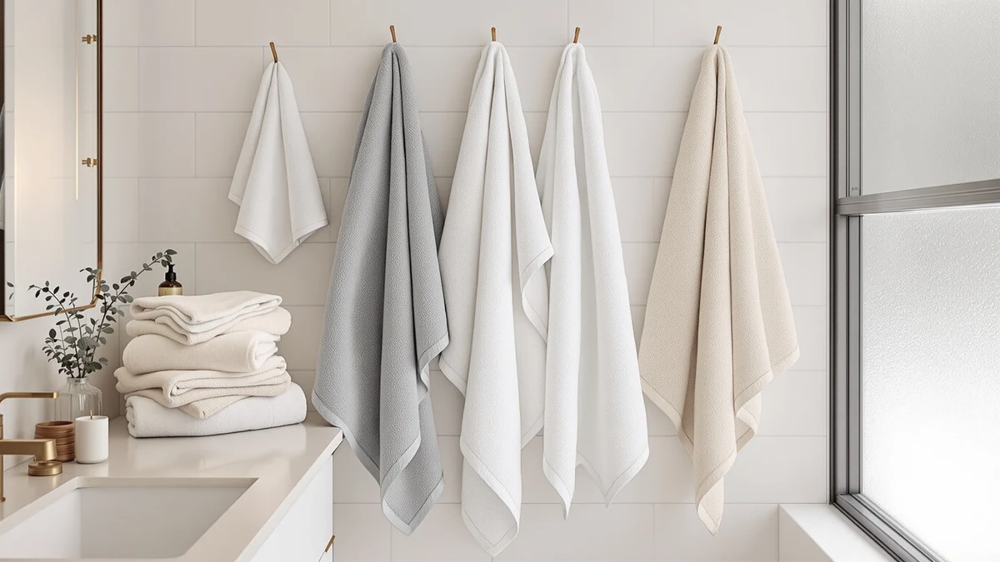

How to Clean Bath Towels with Vinegar and Baking Soda: Complete Guide (2026)
Prices and picks verified as of September 2026. Independent, reader-supported reviews.


Things to Know Before You Buy
- The vinegar and baking soda method works best as an occasional deep clean, not a weekly habit, since frequent acid washes can wear down cotton fibers over time.
- Never mix vinegar and baking soda directly in the washer at the same time. The two react and cancel each other out, so run them as two separate cycles.
- Skip fabric softener entirely during this process. It leaves a waxy film that undoes the buildup-stripping the vinegar and baking soda are meant to do.
- White distilled vinegar and plain baking soda work as well as any specialty product and cost a fraction of the price.
- Towels with special antimicrobial or flame-retardant finishes should skip the vinegar wash, since acid can break down those coatings.
This guide covers how to clean bath towels with vinegar and baking soda, a two-cycle wash that strips the detergent film, body oil, and mildew odor plain washing leaves behind.
Reach for this method when towels feel scratchy despite regular washing or smell sour minutes after you use them, both signs of buildup that a normal detergent cycle cannot rinse away. The process takes two back-to-back wash cycles. There's no scrubbing and no special equipment beyond what's already in your laundry room, and it works on cotton, Turkish cotton, and most bamboo blends.
What You'll Need
- Supplies: white distilled vinegar and baking soda, the two ingredients this vinegar and baking soda method relies on, plus your regular laundry detergent for future loads
- Tools: a washing machine and a standard measuring cup
Step 1: Sort your towels and load the washer
Start by separating your towels the way you would for any load, whites away from colors, and check the care label if you have any doubt about machine washability. Towels with special coatings, like some antimicrobial or flame-retardant lines, should skip this treatment altogether since the acid in vinegar can strip those finishes.
Load the washer about half full rather than packing it tight. Towels need room to tumble and absorb water evenly, and a stuffed drum keeps the vinegar and baking soda from reaching every fiber. Skip the detergent for this first cycle. The vinegar does the work here, and mixing it with detergent cancels out both.
Step 2: Run a hot wash cycle with vinegar
Pour one cup of white distilled vinegar straight into the washer drum, or into the fabric softener dispenser if your machine has one, then set the cycle to hot water on a normal or heavy-duty setting. Hot water helps the vinegar cut through the oily film that lotion, deodorant, and sweat leave on cotton fibers.
This is the cycle that does most of the heavy lifting in the vinegar and baking soda method. The acidity breaks down mineral deposits from hard water and dissolves the sticky detergent residue that built up over months of regular washing. Let the cycle run all the way through, including the rinse, before moving to the next step.
Step 3: Run a second wash with baking soda
With the vinegar cycle complete, add half a cup of baking soda directly to the drum and start a second full wash, again on hot water. Running the two ingredients separately matters: combined in the same cycle, vinegar and baking soda fizz and neutralize each other before either one gets to work on the towels.
Baking soda finishes the job the vinegar started. It lifts the last of the odor-causing bacteria and leaves the fibers noticeably softer, since it does not coat them the way fabric softener does. By the end of this cycle, your towels should already smell neutral instead of sour.
Step 4: Dry the towels immediately on medium-high heat
Transfer the towels to the dryer the moment the wash cycle stops. Left damp in the drum for even an hour, towels start growing the same mildew that caused the smell in the first place. That undoes the work of both wash cycles.
Dry on a medium-high heat setting and run a full cycle rather than stopping early. Towels that come out slightly damp and get folded that way trap moisture in the fold lines, which brings the musty smell back within days. Toss in a couple of dry towels from a previous load if you have them, since they speed up drying time for the rest.
Step 5: Build the routine into your regular towel care
One vinegar and baking soda wash resets your towels, but the detergent buildup and body oils that caused the problem start accumulating again the next time you shower. Plan to repeat the full two-cycle method about once a month, or sooner if you live in a humid climate where towels take longer to dry between uses.
Between deep cleans, cut fabric softener out of your regular towel loads. It coats cotton fibers in a waxy layer that traps odor and cuts absorbency, the same buildup this method removed. Measuring detergent to half the cap line and drying towels fully after every wash will stretch the time between treatments considerably.
Common Mistakes to Avoid
A few habits sabotage this method before it has a chance to work. The most common mistake is combining vinegar and baking soda in the same cycle to save time. The two react on contact, fizzing and neutralizing each other, so neither ingredient actually cleans the towels. Run them back to back instead, exactly as the steps above lay out.
Using scented vinegar or adding essential oils undercuts the process too. Plain white distilled vinegar is unscented and gentle on fabric; scented versions and additives often carry their own oils that leave residue behind. That residue works against what this vinegar and baking soda routine is meant to do.
Skipping the second baking soda cycle because the towels already smell better after the vinegar wash is another shortcut that backfires. Vinegar handles mineral deposits and detergent film, but baking soda finishes off the bacteria that vinegar alone does not fully neutralize. Cut the second cycle and the odor tends to return within a week.
Overloading the washer to save water or time also limits results, since towels packed tight cannot tumble freely enough for either ingredient to reach every fiber evenly. Wash towels in a half-full load, and if you have more than that, run two smaller batches rather than one crowded one.
Our Top Picks
If your towels still feel thin or stay stiff even after this treatment, the buildup may be permanent and it is time to replace them. These three sets hold up well to the frequent washing a vinegar and baking soda routine requires, without going flat or scratchy after repeated hot cycles.

Editor’s Pick
RUBBER BOND Mr and Mrs
This set pairs 100% cotton toweling with the durability to handle a monthly vinegar and baking soda refresh without the embroidered lettering fading or peeling. Reviewers consistently note the fabric stays plush and absorbent after repeated hot washes, which makes it a low-maintenance pick for a shared bathroom.
$54.95
Check Price on Amazon
Best Value
Elegant Comfort 100% Turkish Cotton
Turkish cotton has a longer fiber than standard cotton, so it resists the fraying and thinning that shorter-fiber towels show after a few rounds of hot-water washing. At this price for a full set, owners report it keeps its softness through regular washing better than towels twice the cost.
$42.99
Check Price on Amazon
Premium Choice
Chakir Turkish Linens Luxury Spa
Spa-weight Turkish cotton is heavier and denser than a standard bath towel, so it holds more water per wash and takes a little longer to dry, a tradeoff worth making for the extra plush feel. Verified buyers describe it holding its thickness even after frequent laundering.
$34.19
Check Price on AmazonFrequently Asked Questions
How often should you clean bath towels with vinegar and baking soda?
Once a month is usually enough for most households, or every two to three weeks if you live somewhere humid or wash towels in hard water. Doing it more often than that can wear down cotton fibers faster than normal washing alone.
Can you use vinegar and baking soda on colored towels?
Yes. White distilled vinegar and plain baking soda do not bleach or fade dyed cotton the way chlorine bleach can. Both ingredients are mild enough for colored towels, dark towels, and patterned sets alike.
Is it safe to mix vinegar and baking soda together in the wash?
No, not in the same cycle. Combining them causes an immediate fizzing reaction that neutralizes both ingredients before they can clean anything. Run the vinegar wash first, let it finish completely, then start a separate cycle with baking soda.
Will this method remove mildew smell from towels that sat wet too long?
In most cases, yes. The vinegar cycle breaks down the buildup that mildew spores feed on, and the baking soda cycle handles the odor-causing bacteria. For towels with visible mold spots rather than a smell alone, you may need to repeat both cycles or replace the towel.
Do you still need regular detergent if you clean bath towels with vinegar and baking soda?
You can skip detergent entirely during the treatment cycles themselves, since vinegar and baking soda handle the cleaning. Go back to your regular detergent for normal washes afterward, in a smaller amount than you might be used to using.
Verdict
Learning how to clean bath towels with vinegar and baking soda comes down to two separate wash cycles run back to back: one cup of white vinegar on a hot cycle to strip detergent film and mineral buildup, followed by half a cup of baking soda on its own hot cycle to finish off the bacteria causing the sour smell. Skip fabric softener, dry the towels fully and promptly, and repeat the process about once a month to keep buildup from coming back. None of it requires special equipment or expensive products, only vinegar, baking soda, and two cycles of your regular washer. If your towels still feel thin, scratchy, or stay musty despite this treatment, the fibers themselves are likely worn out rather than dirty, and it is time to replace them. RUBBER BOND's cotton set is the one we would reach for first, since it holds up to the frequent hot washing this routine calls for without the fabric going stiff or thin. Treat your current towels the way this guide lays out, and you should get months, if not years, more life out of them before you need to think about a new set.